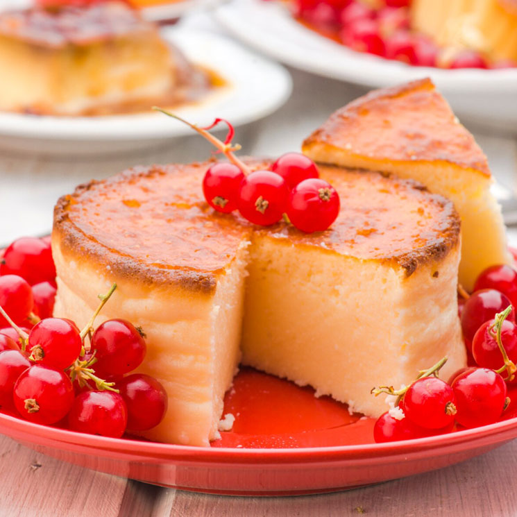
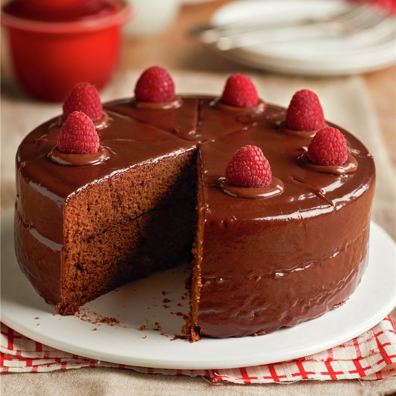

| Ingredientes | Cantidad |
|---|---|
| Carne de cerdo | 1 kg |
| Cebolla blanca | 2 pequeña |
| Tocino | 300g |
| Chorizo | 1/2 kg |
| Tortilla de maíz | 1 kg |
| Ajo | 1 diente |
| Sal | 1 pizca |
| Pimienta | 1 pimienta |
Paso 1: Toma la carne de cerdo, el tocino y el chorizo o longaniza y pícalo todo finamente o córtalo en cubos pequeños.
Paso 2:Fríe primero la longaniza o el chorizo, mueve constantemente hasta que la carne esté medianamente dorada
Paso 3:Una vez dorada la longaniza, agrega el bistec troceado y sigue moviendo constantemente durante aproximadamente 5 minutos más. Es muy importante cocinar adecuadamente cada pieza de carne para que los tacos campechanos queden jugosos y deliciosos.
Paso 4:Añade el tocino y sigue moviendo durante 5 minutos más.
Paso 5:Incorpora la cebolla cortada en rebanadas finas, mueve para integrarla con los demás ingredientes y mantén la preparación al fuego hasta que la cebolla esté bien sofrita. Para saber Cómo cortar cebolla, no te pierdas este artículo
Paso 6:Cuando el guiso de carnes esté listo, toma las tortillas de maíz, agrega una porción del guiso, adereza con cilantro y sírvelas. Es típico servir la receta de tacos campechanos con salsa roja taquera, pero puedes preparar cualquier otra que te guste, como salsa de tomate verde.

FuenteLugar de recetas recomendado
| Ingredientes | Cantidad |
|---|---|
| Queso Philadelphia | 1 tarrina |
| Yogures naturales | 3 de 124 gramos cada uno |
| Huevos M | 3 |
| Harina | 50 gramos |
| Azúcar | 150 gramos |
| Mantequilla | 200 gramos |
Paso 1:Pon el horno a calentar a 175º C. Unta el molde con mantequilla, espolvorea un poco de harina y azúcar, repártelo por el molde y desecha lo que no quede adherido a la mantequilla. Reserva el molde.
Paso 2:Mezcla en un cuenco amplio todos los ingredientes, el queso, los yogures (puedes sustituir alguno por un yogur de limón u otro sabor), los huevos, la harina y el azúcar, y bate con la batidora de mano hasta obtener una crema fina.
Paso 3:Vierte la masa en el molde e introdúcelo en el horno cuando esté a la temperatura marcada. Deja cocer una media hora, dependerá del grosor que le hayas dado y si ves que se tuesta mucho, cúbrela con papel de aluminio.
Paso 4:La tarta estará hecha cuando introduzcas un palillo y salga limpio. Cuando retires la tarta del horno, déjala enfriar y después resérvala en el frigorífico, es cuando adquirirá la particular y clásica textura de las tartas de queso.
| Ingredientes | Cantidad |
|---|---|
| Huevos | 4 |
| Harina | 75 gramos |
| Cacao en polvo | 30 gramos |
| Azúcar | 100 gramos |
Paso 1:Separa las claras de las yemas y móntalas por separado en un recipiente seco y limpio.
Paso 2:Para montar las yemas: bátelas con la mitad del azúcar ayudándote de una varilla durante 15 minutos. Para que monten mejor, las puedes poner cerca del fuego (nunca sobre él). Monta las claras a punto de nieve. Puedes echar un chorrito de zumo de limón para que levanten mejor.
Paso 3:Añade al final el resto del azúcar y sigue batiendo unos 5 minutos. A continuación, mezcla las claras y las yemas montadas. Después, agrega la harina y el cacao en polvo espolvoreándolos poco a poco y mezclando con cuidado para que no se desmonte.
Paso 4:Vierte la masa en un molde untado con mantequilla y harina. Hornea a temperatura media durante 20 a 30 minutos.
Paso 5:Desmolda el bizcocho nada más sacarlo del horno.
Paso 6:Por último, diluye el azúcar glas añadiendo agua poco a poco (la medida de una cucharilla de café) y remueve. Si se queda duro, agrega más agua hasta conseguir la textura adecuada. Decora con este almíbar el bizcocho.
